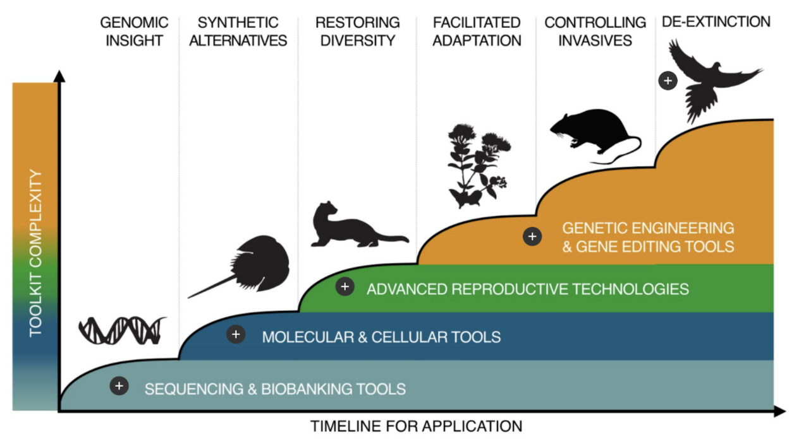

Genetic technologies restore lost species and ecosystems
Humanity’s footprint on planet earth has led to the extinction of many species and the transformation of the majority of earth’s ecosystems. The most recent comprehensive biodiversity assessment finds that up to 1 million species are threatened with extinction. Many of these species, and their ecosystems, provide invaluable ecosystem services to humanity. For example, coral reefs serve as nurseries for fish stocks that provide protein to billions of people around the world.
Over the coming decades, even as humanity switches to increasingly clean ways to generate energy and food for itself, we will need to rescue and restore some of these ecosystems. Biotechnology will provide us with tools to do so, by allowing us to sequence the whole of the natural world, bolster the resilience of existing species, and ultimately to restore some species from extinction.
Conceptual timeline of genetic tools to bolster ecosystems, from Revive and Restore